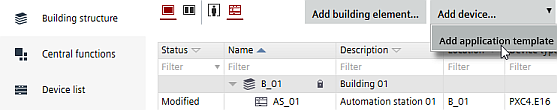
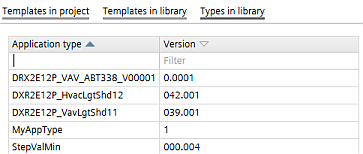
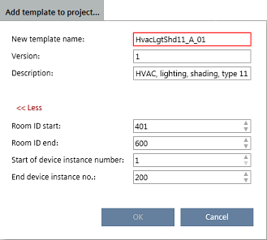

Adding project-specific application templates
Before adding automation stations, there must be at least one application template in your project or library.
Adding devices

Manually entering or changing device instance number values and device instance number ranges can result in duplicate device instance numbers, when application templates or ABT Pro projects have already been created. Make sure that the entered values are accurate.
You can check for duplicate device instance numbers in Building > Device list.
Checking for duplicate device properties
Add application templates
- There is at least one application template or application type in your project or library to select.
- Open Building > Building structure.
- Click Add application template.

- Select an application template from your project or an application type from your library.

- Select the application station type from the application station table, e.g., DXR2.E12P, or a template from the template list.
- Click Add template to project.
- A dialog box opens next to the button.

- Type the New template name, Version, Description, and check the room ID and device instance number values in the corresponding fields.
- Click OK.
- Configuration > Application configuration opens.
- The name of the created application template displays at the top of the configuration sections.
- Complete the application configuration.
Configuring features (template) - Select the Default values task.
- Click Show/hide parameter.
- The Show/hide parameter dialog box opens where you can configure properties and default values.
Configuring default values (template) - Click OK.
- Select the I/O assignment task and assign I/O's according to the specifications of your project.
I/O assignment (task)
- The application template is created and is now available as a template for creating automation stations.